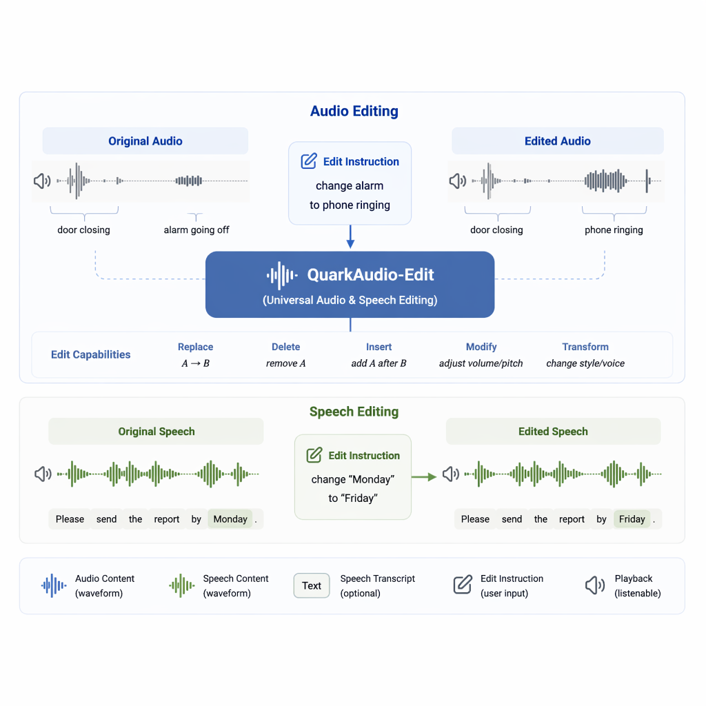
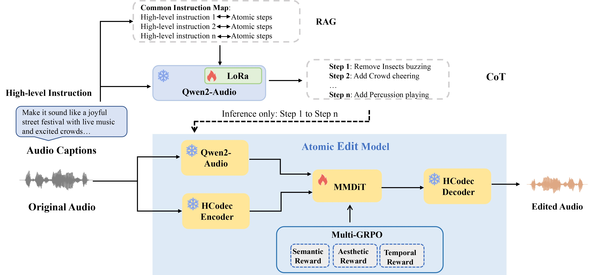
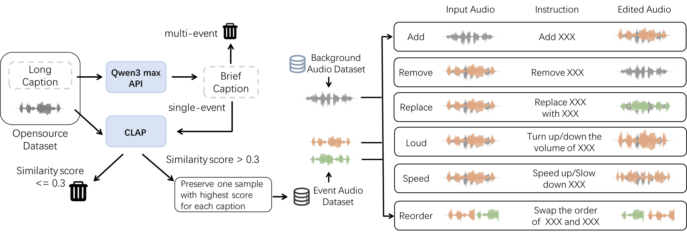
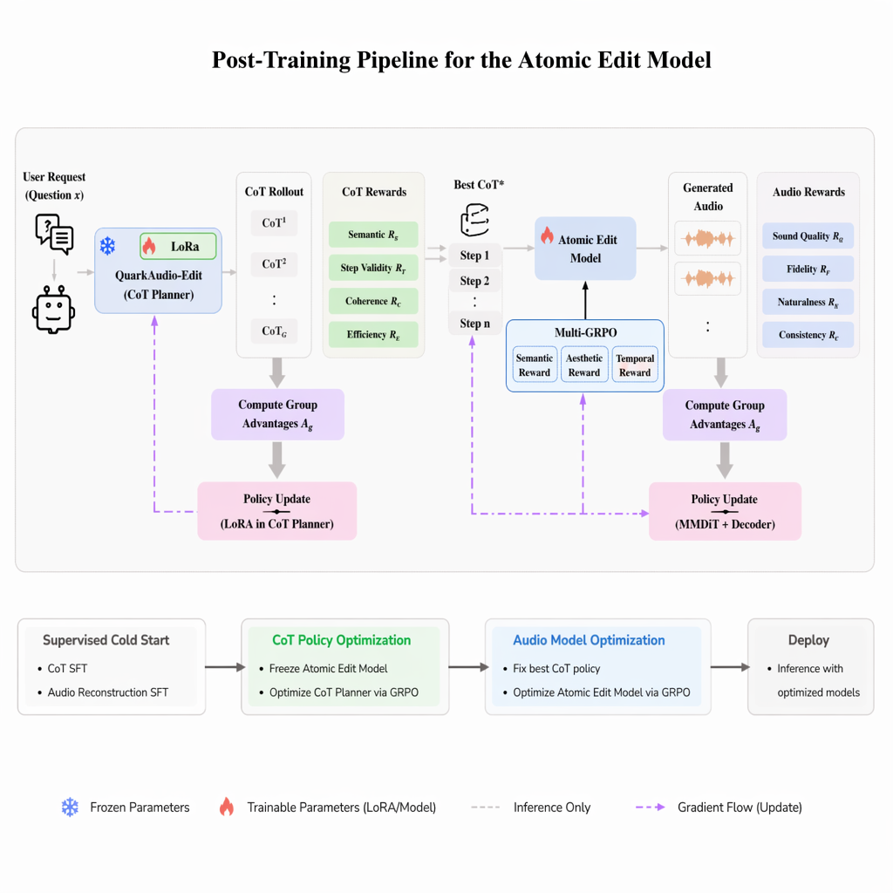

QuarkAudio-Edit tackles four long-standing limitations of text-guided audio editing (TAE): limited operation coverage, rigid instruction formats, absence of chain-of-thought reasoning, and lack of reasoning-aware optimization.
Given a free-form instruction such as
"Transform this rainy forest into a sunny day", our
CoT–RAG planner decomposes it into a sequence of interpretable atomic
operations over
{Add, Remove, Replace, Speed, Loud, Order},
which an MMDiT diffusion editor executes sequentially on the source audio.

Figure 1. Unified audio & speech editing. Top: sound-event replacement (alarm → phone ringing) with non-target audio preserved. Bottom: word-level speech editing (Monday → Friday).
A decoupled Planner–Editor architecture that separates what to edit (reasoning) from how to edit (signal-level synthesis).

Figure 2. End-to-end pipeline. Training triplets are synthesized via Prompt-to-Prompt generation, manual signal-level edits, and online composition. The CoT–RAG ALM planner decomposes free-form instructions into atomic operations; the MMDiT editor executes them sequentially; progressive GRPO refines both stages.
Three complementary pipelines produce 500K+ triplets: Prompt-to-Prompt, manual signal-level edits, and online per-epoch composition over AudioSet & VGG-Sound.
Qwen2-Audio based planner decomposes instructions into atomic operations, guided by top-3 retrieved exemplars from a 510K+ FAISS index (retrieval in < 5 ms).
Multi-modal diffusion transformer built on Stable Audio Open. Source latent is concatenated with the noisy target at every denoising step for faithful non-target preservation.
Two-stage RL: Stage 1 applies multi-rule rewards on CoT chains; Stage 2 uses semantic/fidelity/temporal rewards with a progressive schedule to refine audio edits.

Figure 3. Data synthesis pipeline with Bayesian-optimized Prompt-to-Prompt generation.

Figure 4. Progressive GRPO pipeline: CoT policy optimization followed by audio-quality optimization.
Listen to paired source and edited audio produced by QuarkAudio-Edit from free-form natural-language instructions.
Real audio samples from published baseline systems, crawled from their official demo pages. Listen and compare editing quality across different approaches.
Peek inside the planner: every complex instruction is grounded in retrieved exemplars and decomposed into a transparent reasoning chain.
QuarkAudio-Edit consistently outperforms strong baselines across all six atomic operations and delivers the highest subjective faithfulness.
| Model | Add | Remove | Replace | Order | Loud | Speed |
|---|---|---|---|---|---|---|
| AudioEditor | 3.57 | 4.14 | 3.54 | — | — | — |
| SAO-Instruct | 3.57 | 6.53 | 4.63 | — | — | — |
| MMEdit | 3.72 | 10.18 | 5.92 | 10.08 | 6.72 | 9.00 |
| QuarkAudio-Edit | 1.98 | 3.50 | 2.65 | 2.89 | 3.09 | 4.35 |
| Model | Inference (s) ↓ | Quality ↑ | Relevance ↑ | Faithfulness ↑ |
|---|---|---|---|---|
| AudioEditor | 79.5 | 3.22 | 3.33 | 2.75 |
| ZETA (T=50) | 15.3 | 3.56 | 3.25 | 2.95 |
| ZETA (T=75) | 17.8 | 3.28 | 3.04 | 2.75 |
| QuarkAudio-Edit | 9.94 | 3.54 | 3.83 | 3.99 |
In the spirit of transparent reporting, we document characteristic failure modes of QuarkAudio-Edit, diagnose their root causes along the CoT–RAG–MMDiT–GRPO pipeline, and outline concrete directions for future improvements. Each case below is reproducible from our release.
CoT PlannerRAG IndexMMDiT EditorMMDiT EditorThe four failure modes above motivate the following concrete research directions, which we plan to explore in the camera-ready and follow-up work:
Augment training with automatic instruction paraphrases (covering idiomatic, negated, and hedged phrasings) and add a paraphrase-invariance reward in Stage-1 GRPO to encourage semantically equivalent instructions to yield identical atomic plans.
Expand the RAG index beyond the current 510K entries with rare-event corpora (FSD50K, Clotho-Detail). Replace the dense-only retriever with a hybrid dense + BM25 scheme so that uncommon sound-event terms are not dominated by embedding co-occurrence.
Introduce event-level mask supervision from a frozen sound-event detector during MMDiT training, plus an attention regularizer that penalizes non-target events being altered, to address dense-scene confusion.
Add an acoustic-scene prior (room impulse response + SNR distribution learned from AudioSet) and a loudness-aware reward to Stage-2 GRPO, so that inserted events match the reverberation and level profile of the source scene.
@inproceedings{quarkaudioedit2026,
title = {Think Before You Edit: Chain-of-Thought Reasoning with RAG
for Language-Guided Audio Editing},
author = {Anonymous Authors},
booktitle = {Proceedings of EMNLP},
year = {2026},
note = {Under review}
}